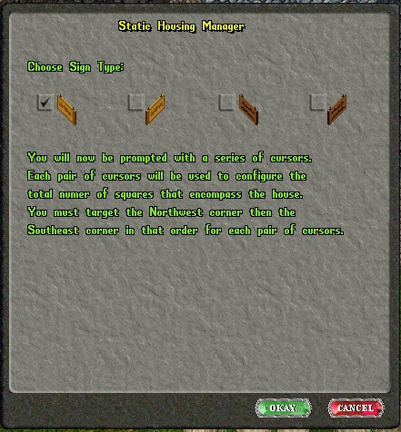
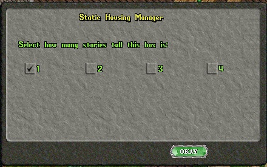
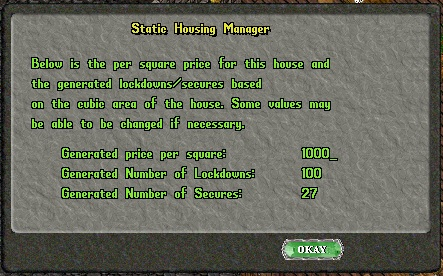

How to
use the staticdeed command:
You must be in "GM mode", able to walk through doors, to use this
command. If you are using the official POL Distro type .gmform to
change your character's graphic to the GM graphic. When you are done
deeding houses type .myform to switch back to your original graphic.
Also, you should set your 'Circle of transparency' in you client's
settings to 104 or greater in order
to see through the South East wall for accurate targeting.
Use the text command 'staticdeed' to setup a static structure for
sale. The process is fairly well documented as you go through the
steps.
It's best to start from the lowest level of the house you intend to
make available for sale.
You will first be presented with a gump where you pick the sign type
and the orientation of the sign. Have in your mind where you are going
to place the sign and pick the proper sign and orientation. As a
general rule you give the nicer or more expensive houses or businesses
a brass sign. Wooden signs would be placed on lower priced houses or
businesses. I have noticed that the multi houses also use wooden signs
for towers, keeps and castles.

You will then be prompted to target the North West, upper, corner of
the floor you are on. Once you do that
you will be prompted to target the South East corner.
After that is done you will be presented with a gump to select how
many levels this will apply to.

If this area applies to 1 story pick 1. If it's 2 or more stories and
they are all the same size as the first area, you can pick the number
of levels and go on. You may also choose to only make the first level
available for purchase and then you would choose 1 as the number of
levels. This is particularly useful if you have structures that have
separate entrances for each level and no way, from the inside, to get
to another level. Also you can make rooms at the inns available for
sale this way.
For example if you want to make a room on the second floor of an inn
available for purchase you would
go up to that room and enter the command staticdeed choose your sign,
target the corners and select 1 for
the number of levels.
Currently this system is limited to a maximum of 4 levels per area
mapped.
Now let's suppose you have a house with a large first level but the
second level is half the size of the
first level. Go ahead and do the targeting for the first level. Select
1 as the number of levels. You are
next presented with a target and asked to target the NW corner again.
Go up to the smaller second level and go though
the targeting procedure and when you are presented with the gump
asking for the number of levels choose the number
that applies, probably 1.
This system can also be used for odd shaped houses such as those 'L'
shaped houses or the house in Skara Brae
that is shaped like a plus sign, +. Just go through the targeting
process for each section. Try not to overlap
sections. I do not know if overlapped sections will cause any problems
but best not to tempt fate.
For example, with the plus sign shaped house in Skara Brae, you could
map a large rectangle which extends from one wing to another. Then map
just the two wings that are left.
When you are laying out the first floor of a house you are not limited
to just the interior of the structure.
You may include an area around the exterior of the house as well. I
used to include an extra square around the
house by targeting just outside the North West and South East corners
or, in the case of those 'L' shaped houses,
I would just map the 'yard area', the exterior quadrant of the square,
as part of the house. Naturally the price was a
little higher because of it but the players got something in return, a
yard they could use for other things.
Once you are done mapping out the house press <esc> at the
targeting cursor. You will be presented with a gump showing the price
per square, number of secure containers allowed, and the number of
lockdowns allowed.

You may be able to edit some or all of those values. That ability can
be enabled in the settings.cfg file for this package. When you are
satisfied with the values, assuming you have the ability to change
them, click 'OKAY'.
Next you will be asked where to place the sign. Pick a good location
where it is easily accessible. After that you will be asked to target
the exterior doors. Target ALL doors that allow entrance from the
outside. Do not target any doors on the interior of the house.
Once you have selected all the exterior doors press <esc> again.
The house is now ready for purchase with the price,
number of secures and lockdowns listed on the sign. Single click on
the sign to see the information.
To buy it, the player simply double-clicks on the sign, answers "yes"
to the gump, and if she has enough
gold, either in her backpack or in her bank chest, she can buy it. She
must have enough gold in one place or the other.
The system does not combine gold in the backpack and bank box to equal
the price of the house.
In the event a house is not refreshed before the decay time is
reached, anything locked down by the owner is released. Any secures
are unsecured and released. The house sign returns to a For Sale sign
and can be purchased by another player.